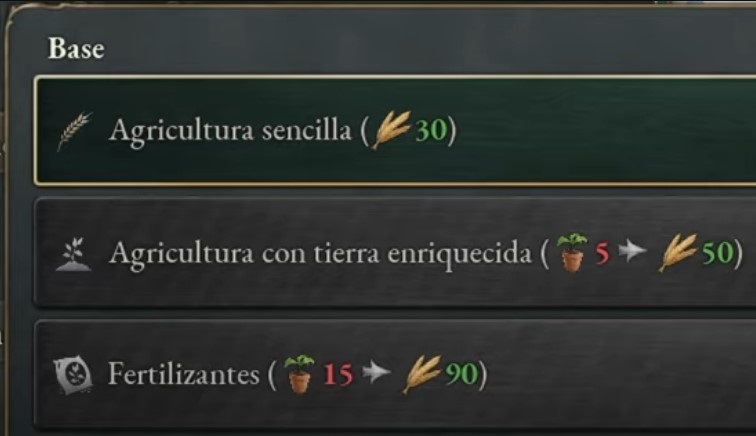
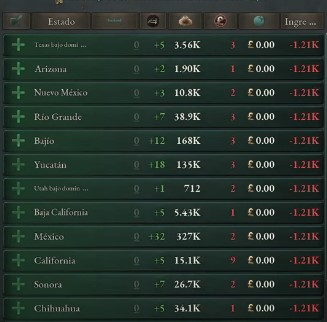

Necesidades de los nuevos métodos de producción
Este mod muestra la entrada y la salida de cada método de producción. Cada valor representa la cantidad por nivel de edificio.
Descargalo aquíMás datos sobre los edificios

Este mod cambia la vista de cuadrícula del edificio en el panel de estado.
- Añade el saldo semanal.
- Agrega barra de capacidad de empleados.
- Agrega infraestructura y capacidad tributaria al fondo.
Cambios en el mapa de construcción
Mod simple que agrega columnas para Infraestructura y Pops desempleados a la interfaz de construcción.
Descargalo aquíMejora en el mapa del mercado nacional

¿Cansado de desplazarse por la pestaña de detalles del mercado? Este mod condensa las entradas en la lista para que se vean más productos a la vez.
Descargalo aquíMejora en el mapa de las rutas comerciales

Este es un mod que intenta cambiar la pestaña de rutas comerciales a una versión más compacta.
Descargalo aquíMás información sobre las tropas

Mod simple que agrega barras morales a las batallas activas en el panel frontal y coloca íconos de batalla activa en el mapa encima de los íconos frontales.
Descargalo aquíNuevas notificaciones sobre los acontecimientos del país

¿Estás cansado de perderte lo que sucede en una obra de Diplo? ¿Quién se echó atrás y quién te apoya? ¿Cuándo un Ig cambia de líder e ideología? ¿Qué está pasando con tu armada durante la guerra? "Better War & Diplo Notifications" soluciona todo eso al dar más visibilidad a ciertas notificaciones.
Descargalo aquíDisminución del tamaño de ciudades

Baja la escala de ciudades, rutas, puentes, trenes, barcos, vehículos, etc. en el mapa al 50%
Descargalo aquíMejora de la lista de construcción

Este mod añade tiene como objetivo mejorar la cola de construcción:
- Muestra el estado donde se está construyendo un edificio.
- Reduce el tamaño de cada elemento para que se puedan ver más a la vez.